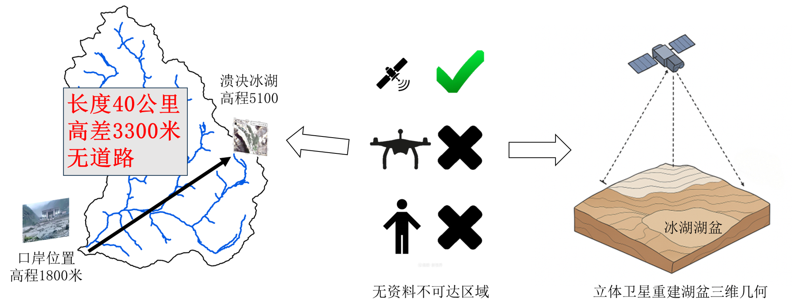
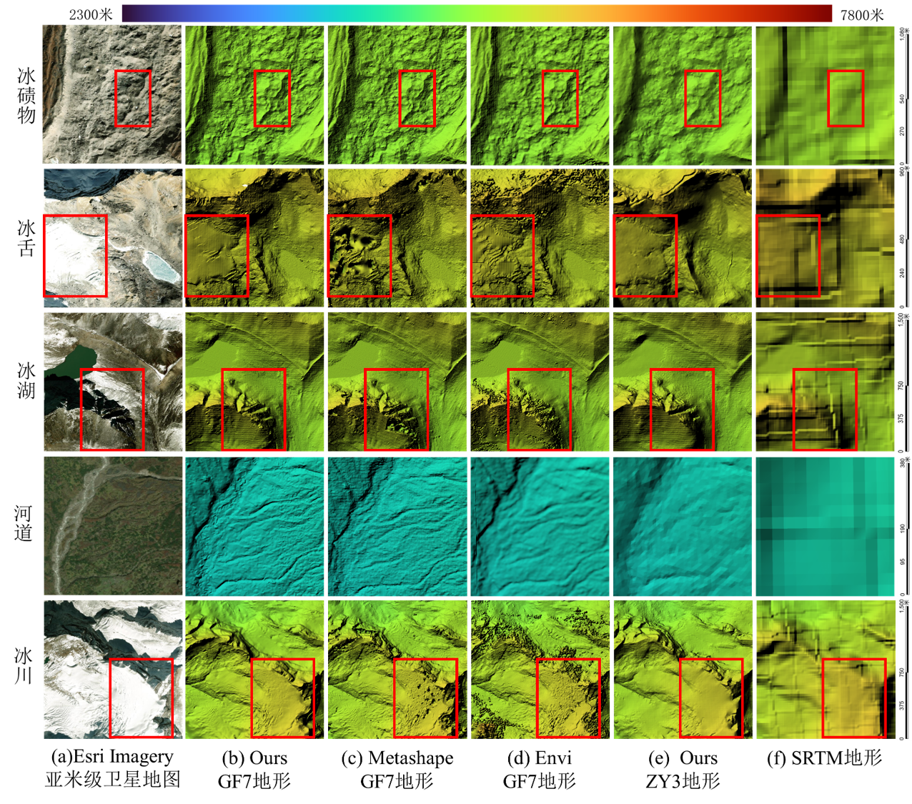
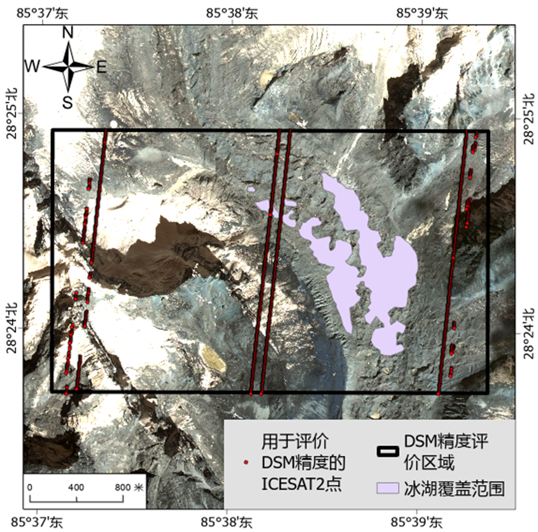
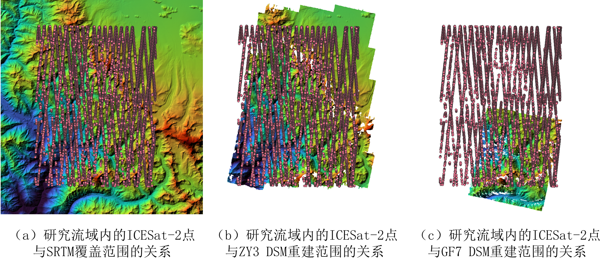
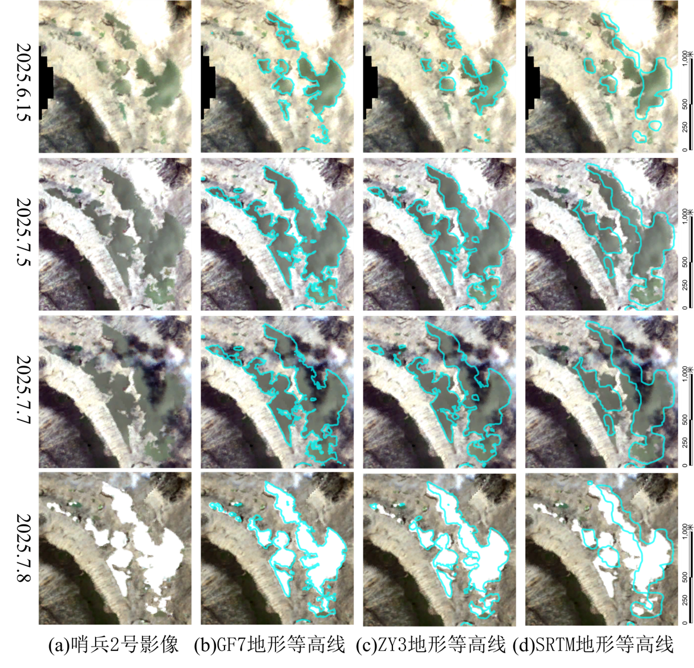
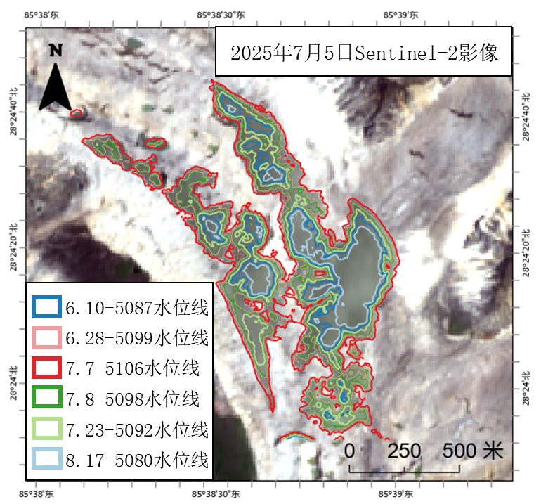
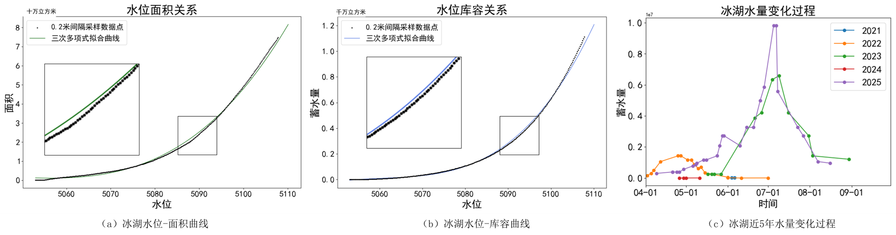
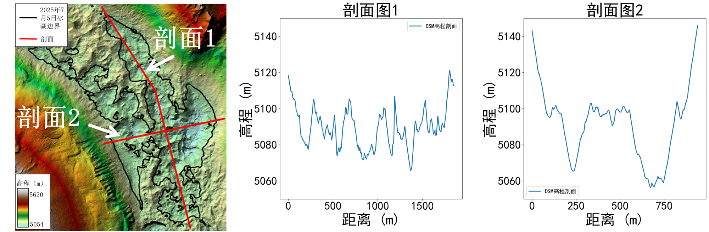
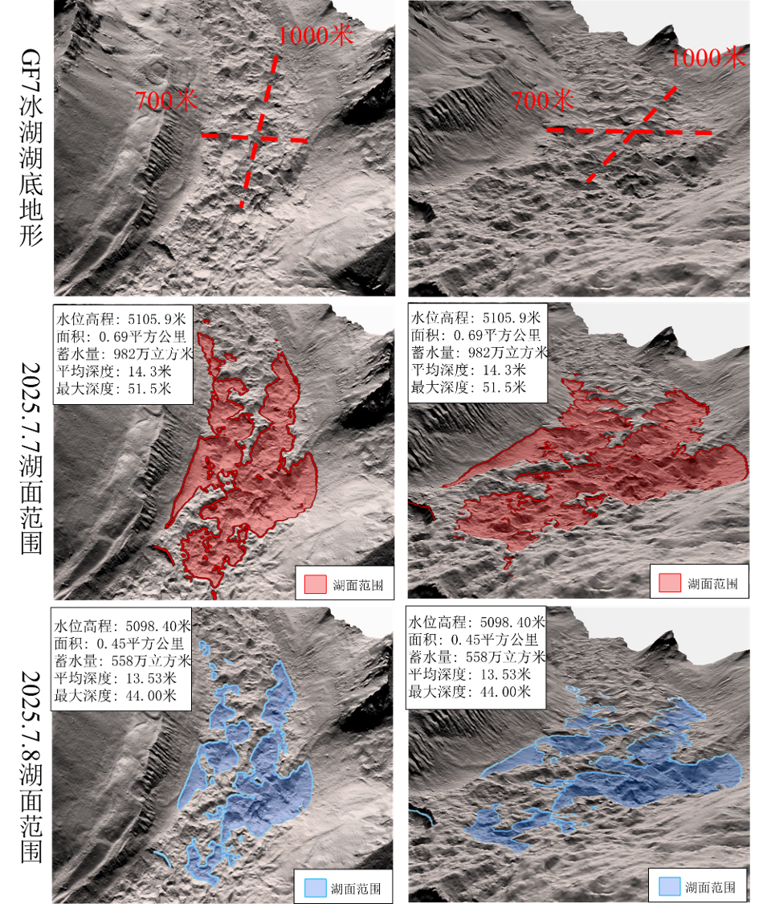

基于国产立体卫星影像的高原冰湖三维重建与蓄水量估计
——以“7 ∙ 8”吉隆口岸冰湖溃决洪水为例
| 曲英杰1 | 叶松1* | 王莹1 | 李芹1 |
| 廖博承1 | 姚正利1 | 周建银2 | 王珺柯1 |
| 1. 长江科学院 空间信息技术应用研究所，武汉 430010 |
| 2. 长江科学院 河流研究所，武汉 430010 |
摘 要
针对高原偏远无资料地区冰湖水量动态精准监测的难题，提出一种基于立体测绘卫星的水量估算方法。以2025年7月8日西藏吉隆溃决冰湖为例，利用高分七号（GF7）与资源三号（ZY3）立体影像重建湖盆数字表面模型（DSM），并结合2021–2025年哨兵二号影像自动提取多时相湖泊边界，通过边界与地形等高线最优匹配估计水位与蓄水量，同时采用ICESat-2激光测高数据验证地形精度。结果表明，本文GF7-DSM与ICESat-2之间的平均绝对误差为1.37米；时序监测显示该冰湖存在明显“冬枯夏涨”现象，2025年7月7日蓄水量达历史极值约982万m³；溃决发生于7月7日12时52分至8日12时56分，24小时内下泄水量约424万m³，洪峰传播路径总长41.2km、落差3318 m、平均比降80.5‰，巨大势能转化与强水动力条件是导致灾害的直接原因。研究验证了国产立体测绘卫星在无资料地区冰湖动态水量监测中的有效性，可为高原冰湖溃决预警与灾害防控提供数据支撑。
关键词： 水量监测；冰湖溃决洪水；星载立体测绘；高分七号卫星；应急监测
7·8吉隆洪水
2 基于国产立体卫星的溃决冰湖水量监测
基于立体卫星重建冰湖湖盆三维地形
3 技术路线
4 实验与分析
4.1 重建DSM定性分析
图1对比了不同DSM的地形差异。本文方法重建的GF7 DSM（图1b）展示了最为丰富的地形细节。商业软件（图1e, f）在冰舌等弱纹理区域出现了明显的地形空洞，而本文方法在相同区域的地形更为完整平滑。
图1 DSM细节对比
4.2 基于ICESat-2的无资料地区地形精度评定
冰湖区域DSM精度评价
为客观评估不同地形数据产品的高程精度，以ICESat-2激光测高数据作为参考真值进行精度统计。引入两款主流商业软件（ENVI, Metashape）生成的DSM，与本文方法（Ours-GF7, Ours-ZY3）及SRTM数据进行对比。
图2 冰湖区域DSM精度评价范围
如表1所示，本文方法（Ours-GF7-DSM）的高程精度最高，其MAE为1.37米，RMSE为1.62米。商业软件的精度（MAE 1.42米, 1.51米）略低于本方法。Ours-ZY3-DSM精度次之（MAE 2.65米），而SRTM数据因分辨率限制，误差最大（MAE 5.17米）。
表1 不同地形数据与ICESAT2高程的相对精度，误差单位米
| 地形数据 | ICESat-2点（万） | RMSE | MAE | Q75 | Q95 |
|---|---|---|---|---|---|
| SRTM | 1.9 | 6.18 | 5.17 | 7.49 | 11.56 |
| Ours-ZY3-DSM | 1.9 | 3.09 | 2.65 | 3.90 | 5.40 |
| ENVI-GF7-DSM | 1.9 | 1.67 | 1.42 | 2.16 | 3.20 |
| Metashape-GF7-DSM | 1.9 | 1.81 | 1.51 | 2.11 | 3.40 |
| Ours-GF7-DSM | 1.9 | 1.62 | 1.37 | 1.97 | 3.13 |
整体DSM精度评价
基于ICESat-2高程点对各自完整覆盖区域（包括ZY3、GF7与SRTM DSM）进行精度评定，图3展示了DSM和流域ICESat-2点的关系。
图3 不同DSM和研究流域内ICESat-2点集的覆盖关系
表2展示了各DSM在整体覆盖范围内的定量精度。结果显示，本文方法（Ours-GF7-DSM）的平均绝对误差（MAE）为2.26米，精度最高。相比之下，商业软件（ENVI、Metashape）由于在雪山等弱纹理区域存在明显几何粗差（如图4所示），导致其整体MAE显著偏高（4.94米和4.41米）。
表2不同地形数据在整体覆盖范围内与ICESat-2高程的相对误差，误差单位米
| 地形数据 | 验证点(万个) | RMSE | MAE | Q75 | Q95 |
|---|---|---|---|---|---|
| SRTM | 349.2 | 7.33 | 5.76 | 8.67 | 15.01 |
| Ours-ZY3-DSM | 282.6 | 4.18 | 3.36 | 5.13 | 8.13 |
| ENVI-GF7-DSM | 69.5 | 7.08 | 4.94 | 6.70 | 16.57 |
| Metashape-GF7-DSM | 69.5 | 7.22 | 4.41 | 5.12 | 15.85 |
| Ours-GF7-DSM | 66.8 | 2.79 | 2.26 | 3.38 | 5.43 |

图4 不同方法在雪山等无纹理区域存在的几何粗差
整体DSM精度评价受弱纹理区域的粗差影响较大（如图4）。为排除大范围粗差干扰，评估冰湖核心区的地形重建质量，采用上述针对冰湖周边8km²重点区域的精度评价（见表1）。
4.3 冰湖蓄水量估计与时空演变分析
（1）等高线与湖泊边界匹配结果
图5展示了不同时期冰湖边界与利用SRTM、ZY3 DSM及GF7 DSM所生成等高线的匹配结果对比。基于GF7 DSM提取的等高线与影像中的水体边界高度吻合；ZY3 DSM所获等高线整体趋势一致，但存在局部偏差；而SRTM数据差异显著。
图5 地形等高线与湖泊边界最优匹配结果
（2）2025年冰湖溃决过程分析
如图6所示，自2025年6月10日起，冰湖进入快速蓄水期。至7月5日，水位上升约19米。北京时间7月7日12时52分，蓄水量达到观测峰值。而在7月8日12时57分的影像中，湖面范围急剧收缩，水位骤降，反映了溃决事件的发生。
图6 2025年不同时期冰湖的轮廓变化
（3）多年蓄水量演变与溃决量估算
基于高精度GF7-DSM，计算水位-面积（H-A）和水位-库容（H-V）关系。图7(c)展示了2021–2025年冰湖蓄水量的年际变化。2022年、2023年及2025年表现出显著的“夏涨秋消”特征。2025年蓄水量显著增大，于7月7日达到历史最高的982万m³，并在24小时内发生溃决，下泄水量约424万m³。洪峰从冰湖至吉隆口岸的路径总长41.2km，高程落差3318m，平均比降达80.5‰，导致下游发生严重洪水灾害。
图7 冰湖水位与面积、库容对应关系与水量时序变化
4.4 流域地形三维分析
（1）冰湖剖面形态
图8展示了冰湖的典型剖面形态，可见其湖底由冰碛物不均匀堆积而成，整体呈现粗糙的结构特征。冰碛物堆积坝体结构稳定性较差，易发生失稳。
图8 冰湖剖面图
（2）溃决前后淹没范围三维可视化
图9展示了溃决前后（2025.7.7和2025.7.8）冰湖淹没范围变化。2025年7月7日至8日期间，该冰湖蓄水量急剧下降，湖面范围在24小时内显著收缩。
图9 湖面范围三维可视化
5 结论
本文针对高原无资料地区冰湖水量监测难题，提出了一种融合国产高分辨率立体测绘卫星、多光谱遥感与星载激光测高技术的方法。以2025年7月8吉隆口岸溃决冰湖为研究对象，实现了该冰湖的水量动态监测，主要结论如下：
- 高分七号卫星立体影像可实现季节性冰湖的水量动态监测，在冰湖区域与ICESat-2点高程的相对误差为1.37米。
- 时序分析表明，溃决冰湖在2025年7月7日蓄水量达到历史极值982万m³，随后在24小时内急剧下泄约424万m³。洪峰路径总长41.2km，高差达3318m，平均比降达80.5‰，强动力条件与巨大势能转化是导致此次灾害的直接原因。
- 即便冰湖在影像中呈不连续分布，其地形等高线仍与冰湖边界高度匹配，证实冰碛坝体内部存在连通性。湖底组成以冰碛物为主，结构松散，构成持续性溃决风险。
- 基于多年时序分析，该冰湖在部分年份呈现季节性蓄水现象。当水位超过5104m、蓄水量大于400万m³时，建议结合气象要素加强实时监测与预警。
未来将尝试在具备实测水文资料的区域开展方法验证；进一步地，通过引入多源数据（如SAR等）提升地形重建的准确性与可靠性，并将本方法推广至已蓄水冰湖的水量变化监测中。
致谢
感谢自然资源部国土卫星遥感应用中心为本研究提供的高分七号（GF7）和资源三号（ZY3）卫星数据。